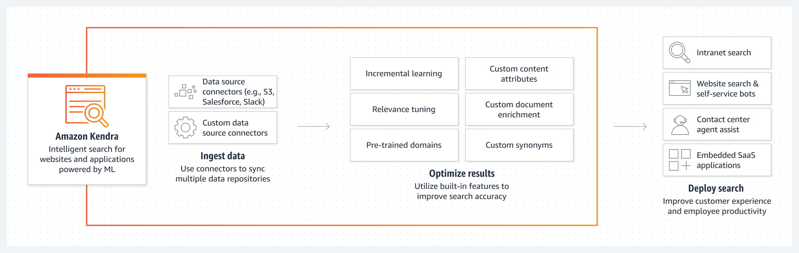

Beschreibung
Amazon Kendra ist ein innovativer Suchdienst, der von maschinellem Lernen angetrieben wird und darauf abzielt, die Sucherfahrung in Unternehmen zu transformieren. Der Dienst ermöglicht es, Informationen schnell und effizient zu finden, unabhängig von ihrem Format oder ihrer Quelle.
Hier sind weitere Details über Amazon Kendra:
Durch den Einsatz fortschrittlicher maschineller Lernmodelle kann Amazon Kendra komplexe Suchanfragen verstehen und relevante Informationen aus verschiedenen Quellen extrahieren.Diese Funktionalität ist besonders nützlich in Umgebungen, in denen Daten in unterschiedlichen Formaten vorliegen oder über verschiedene Datenquellen verteilt sind.
Eine der herausragenden Funktionen von Amazon Kendra ist die Unterstützung natürlicher Sprachsuche.Benutzer können Suchanfragen in alltäglicher Sprache formulieren, was die Benutzerfreundlichkeit erheblich verbessert und die Effizienz bei der Suche nach Informationen steigert.
Dank seiner Fähigkeit, Informationen effektiv zu filtern, können Benutzer genau die relevanten Informationen erhalten, die sie benötigen, ohne von irrelevante Ergebnissen überflutet zu werden.
Amazon Kendra unterstützt eine Vielzahl von Datenformaten, darunter Text, PDFs, HTML, Microsoft Office-Dokumente und vieles mehr. Dies ermöglicht es Unternehmen, unabhängig von der Art der gesuchten Informationen, von Kendra zu profitieren.
Die einfache Verwaltung und Integration von Amazon Kendra in bestehende Systeme und Anwendungen erleichtert die Implementierung und Anpassung des Suchdienstes, um eine optimale Suche nach Informationen zu gewährleisten.
* Amazon Kendra: Intelligenter Suchdienst
* Getrieben von maschinellem Lernen
* Verbessert Suche in Unternehmen
* Extrahiert relevante Informationen aus verschiedenen Quellen
* Unterstützt natürliche Sprachsuche
* Filtert Informationen effektiv
* Unterstützt verschiedene Datenformate
* Einfache Verwaltung und Integration
* Optimiert Informationsfindung und Benutzererfahrung
Schlüsselwörter
> > > Schlüsselworte bzw. Schlagworte sollen uns dabei helfen, einen Service leichter zu erkennen, wenn es um Prüfungsfragen geht. Ließ dir die Fragen richtig durch und achte auf folgende Schlüsselworte. Sie können dir bei der Beantwortung der Fragen helfen.
- Container-Orchestrierung: ECS ermöglicht daren von Docker-Containern in der AWS-Cloud.
- Container-Definitionen: Definition von Containber die Verwendung von Aufgaben (Tasks) und Services.
- Docker-Integration: ECS unterstützt Docker-Container und ermöng von Docker-Images.
- Task-Definitionen: Spezifikationen, wie eine Aufgabe (Task) in einvon Services, um langfristig laufende Anwendungetartet und Aufgaben ausgeführt werden.
- Auto Scaling: Automatische Anpassung der Anzahl von las basieinierbaren Metriken.
- Load Balancing: Integration mit dem Elastic Load Balancing-Dienst für die Lr.
- AWS Fargate: Option zur Ausführung von Containern ohne die Notwendigkeit, EC2.
- Integration mit Amazon ECR: Nahtlose Integration mit d
Grafische Erklärung
Prüfung Fragen
- Ein führendes Forschungsunternehmen muss auf Informationen in alten Patenten und Dokumenten (wie PDFs, Textdateien, Word-Dokumente usw.) zugreifen, die in seiner riesigen Wissensdatenbank vorhanden sind. Das Unternehmen ist auf der Suche nach einem leistungsfähigen Suchwerkzeug, das diese Wissensressourcen durchsuchen und die relevantesten Dateien/Dokumente zurückgeben kann. Welcher der folgenden Dienste ist der richtige, um diese Anforderung zu erfüllen?
- Was ist ein Hauptmerkmal von AWS Kendra, einem verwalteten Service von Amazon Web Services (AWS)?
- Welche Vorteile bietet AWS Kendra Unternehmen bei der Verwaltung und Nutzung ihrer Datenbestände?